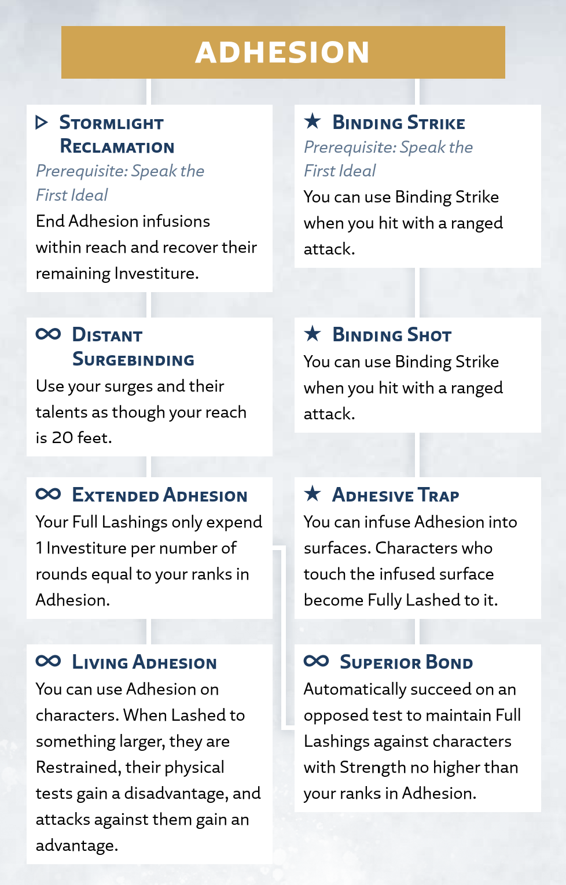

Adhesion
Presence
The surge of Adhesion binds things together. These can be physical objects, or for more advanced Surgebinders like Bondsmiths, spiritual Connections. Adhesion infusions are most commonly used to create a Full Lashing, in which the Surgebinder adheres two physical objects together by manipulating air pressure and resistance.
Adhesion Surge
Radiant Orders: Bondsmith, Windrunner
Activation: ▶
To perform a Full Lashing, spend 1 Investiture or more, infusing it into two unsecured objects within your reach and within 5 feet of each other; you must have a hand free and touch the targets. The infusion uses 1 Investiture each round, and the two objects become stuck together for the duration.
Each object you target can't exceed the surge size for your ranks in Adhesion (see the Surge Scaling table at the beginning of this chapter).
If you wish, one of these two objects can instead be the ground, wall, ceiling, or similar surface; you can target this surface regardless of its size. You can't use this surge on characters, Invested objects (like Shardplate), or objects that have been infused with Stormlight (like infused spheres or objects affected by surges).
Using Adhesion
In addition to the basic surge rules above, this section provides more guidance on using or interacting with this surge in your game.
Adhesion on Others
While you can't target characters with Adhesion, you can target objects they're holding or wearing. If a character is willing, you can easily infuse objects in their possession.
To perform a Full Lashing on one or more objects an unwilling character is holding or wearing, you must succeed on an Adhesion test against the target's Physical defense. On a failure, you don't infuse those objects and you don't spend Investiture on the attempt.
You can use this surge in countless creative ways, and it's up to you and your GM to decide how to resolve each situation. For example, if you Lash your opponent's boot to the ground, they might become Immobilized until they manage to remove the boot. Or if you Lash their bracer to their pants, they might gain a disadvantage on tests using that arm until they disentangle themselves.
Breaking a Full Lashing
A Full Lashing is quite strong and the Lashed objects themselves usually break apart before the bond does. A skilled wielder of Adhesion knows which objects (and their parts) stand up best to attempts to separate them.
A character can try to break apart two objects you've Lashed together. To do so, they Use a Skill to make an Athletics test opposed by your Adhesion. If they succeed, they break the Lashing (or the object, at the GM's discretion) and the infusion ends.
Adhesion Talent Tree
Adhesion Talents
The following talents, presented here in alphabetical order, appear in the Adhesion talent tree for the Windrunner path.
Adhesive Trap
Prerequisite: Binding Shot talent
Activation: ★
You can infuse Adhesion into surfaces, causing anyone who touches them to become stuck.
When you use Adhesion, you can choose to infuse no objects, and instead only infuse a portion of one surface, up to the size you can affect with your ranks in Adhesion.
When another character touches this infused area, they become subject to a Full Lashing with that surface for the duration of the infusion, and your test to Lash them in this way automatically succeeds. For example, a character becomes Lashed to the surface if they're touching it when you infuse it, if they later touch it while moving through its space, or if they're forcibly moved into its space (such as with a gravitational Lashing).
Binding Shot
Prerequisite: Binding Strike talent
Activation: ★
You "paint" your ammunition with Adhesion before throwing or firing it at a target, transferring the infusion to one of your target's possessions.
You can use Binding Strike when you hit with a ranged attack at any distance, and you don't need to touch the infused targets or have a hand free.
Binding Strike
Prerequisite: Speak the First Ideal
Activation: ★
You can seamlessly use Adhesion while performing your melee attacks.
After you hit with a melee attack, you can spend ✧ or 2 focus to use Adhesion, infusing Investiture as usual but without spending an action. At least one target must be an object the target is holding or wearing, and you automatically succeed on the test to infuse it. As usual, the other object or surface must be within 5 feet of the first object, but you don't need to touch it or have a hand free.
Distant Surgebinding
Prerequisite: Stormlight Reclamation talent
Activation: ∞
You can infuse targets from a greater distance.
You can use your surges and their talents as though your reach is 20 feet, and you don't need to touch the target. (As usual, if you adhere two objects together, they must be within 5 feet of each other.)
Extended Adhesion
Prerequisite: Distant Surgebinding talent
Activation: ∞
Your Full Lashings use less Stormlight, allowing them to last much longer.
When you perform a Full Lashing, instead of the infusion using 1 Investiture per round, it expends 1 Investiture per number of rounds equal to your ranks in Adhesion. For example, if you have 3 ranks in Adhesion, those infusions expend Investiture once every 3 rounds.
Living Adhesion
Prerequisite: Extended Adhesion talent
Activation: ∞
You can apply Adhesion directly to other living beings, sticking their bodies to surfaces.
You can use Adhesion on characters, making a test as if you were targeting an object in their possession. When you Lash a character to an object or surface that's larger than them, that character becomes Restrained, they gain a disadvantage on all physical tests, and all attack tests against them gain an advantage.
Stormlight Reclamation
Prerequisite: Speak the First Ideal
Activation: ▷
You can reclaim Stormlight from active infusions.
After your infusions expend their infused Investiture at the start of your turn, you can end any number of those infusions within your reach, recovering all remaining Investiture they were infused with.
Superior Bond
Prerequisite: Adhesive Trap talent or Extended Adhesion talent
Activation: ∞
Your Full Lashings can be broken only by the strongest of individuals.
When a character attempts to break one of your Full Lashings, if their Strength attribute is lower than or equal to your ranks in Adhesion, you automatically succeed on the opposed test without either of you rolling.